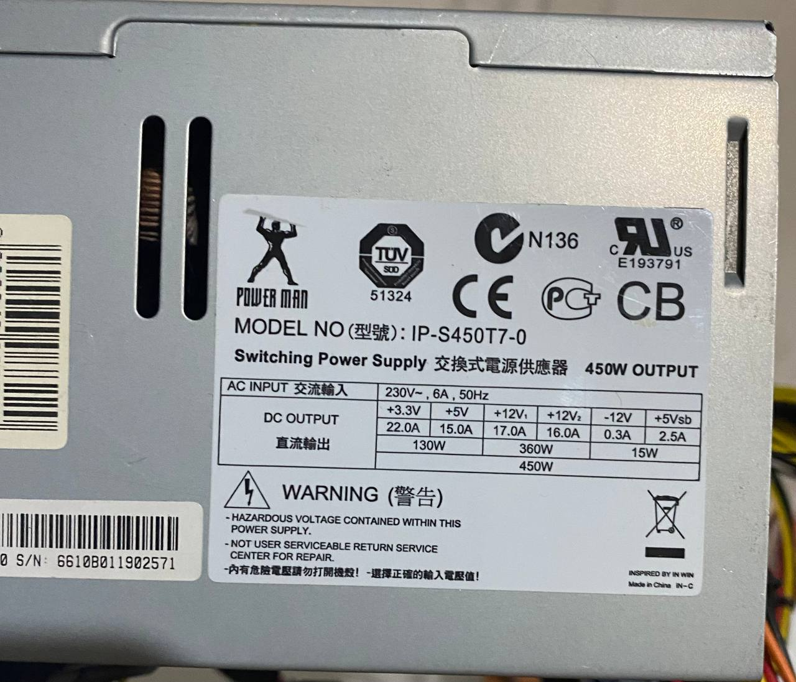

Маркировка на блоках питания (UPS) обычно содержит информацию о их характеристиках и спецификациях.

Вот некоторые общие элементы маркировки блоков питания:
производитель:
название компании, производящей блок питания, например, APC, CyberPower, Eaton, и т.д.
модель:
конкретная модель блока питания, например, APC Back-UPS Pro 1500, CyberPower CP1500AVRLCD, Eaton 5P1500.
емкость:
выражается в ваттах (Watt) или VA (Вольт-Ампер), например, 750 ВА или 1000 Вт.
входное напряжение:
диапазон входного напряжения, обычно в вольтах (В), например, 100-240 В.
выходное напряжение и ток:
напряжение и ток на выходе блока питания, часто указаны в вольтах (В) и амперах (А), например, 120 В при 5 А.
тип батареи:
литий-ионная батарея, свинцово-кислотная батарея (герметичный свинцово-кислотный аккумулятор или SLA) и т.д.
интерфейсы и защита:
сведения о наличии защиты от перенапряжения, защиты от короткого замыкания, интерфейсов (USB, RJ45) и других функций.
габариты и вес:
размеры и вес блока питания для удобства размещения и транспортировки.
гарантия:
срок гарантии, предоставляемой производителем на блок питания.